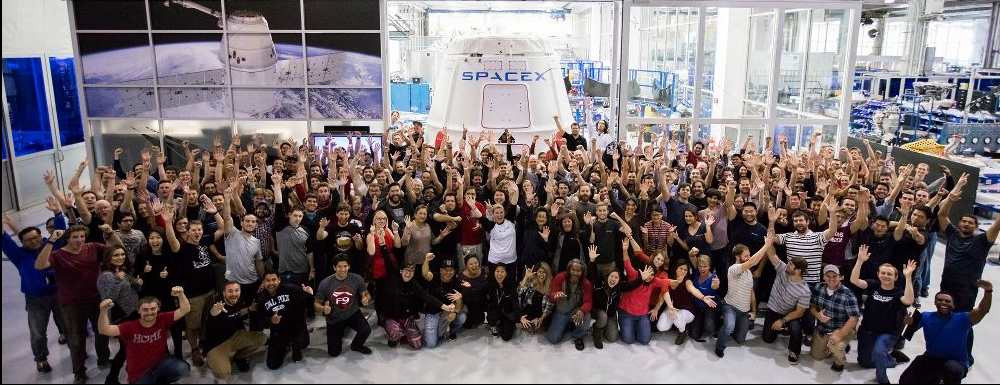
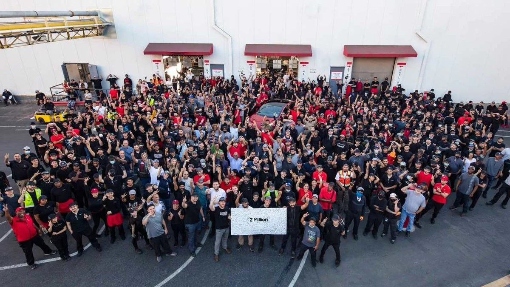
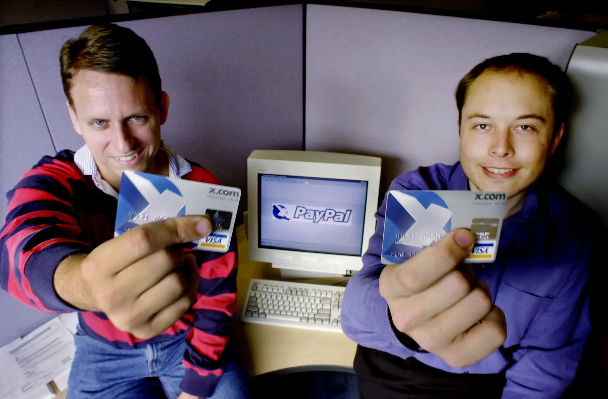

Elon is good at growing his businesses from the ground up. It isn't well known but his ventures where actually not funded by his father, but rather Elons early business ventures in college.
Have a look below to see how some of his business's are doing.
|  |
One of the most notorious accomplishments Elon has achieved is the most success R&D ,rocketry ,and aeronautics company in the world, Space-X. Their goal is to design and industrialize, rapidly reusable rockets for commercial space travel. |
|---|---|
| Space-X launch Team (Post full thrust Falcon Heavy boost success) |
|
|
Elon's plans for Tesla far exceed those of space-x. The #1 major invention, contrary to popular belief, is the heat pump. |
 |
| Tesla floor team (Celebrating gigafactory-texas just sold 2 million cars) |
|
|  |
Elon's first business venture started in college with the original name x.com . With wanting to send money fast like credit cards ,but at the same time be able to give money to other people, like cash. This made him his first million. |
| Peter Thiel and Elon Musk (Day of paypal's launch) |
If you are interested in some of Elons ventures then I would recommend checking out this interview by Joe Rogan.
Or watching the video below.